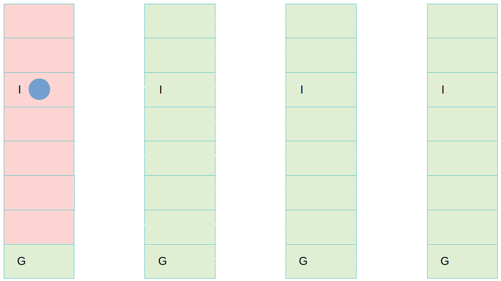
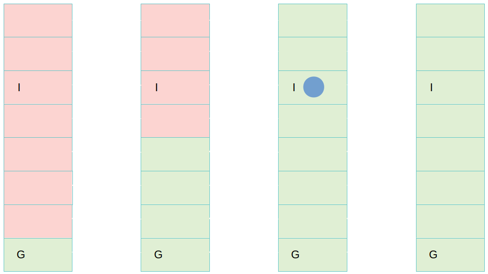
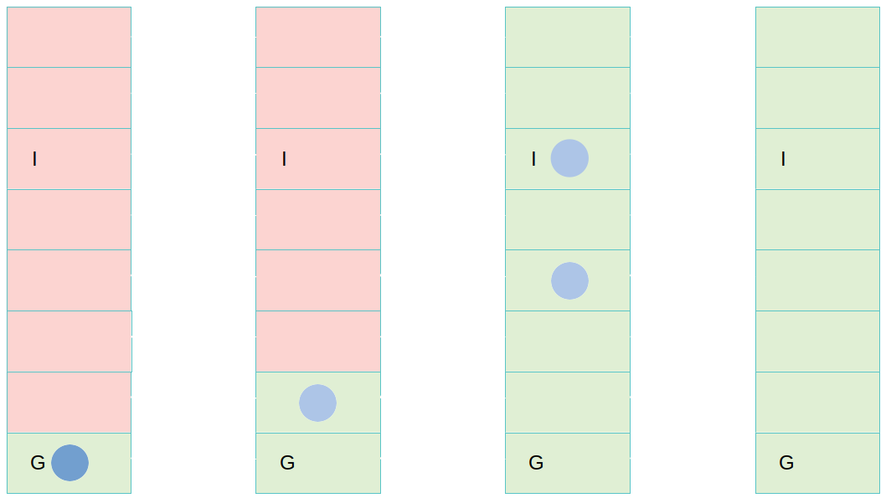

Fast Parallel PDR Algorithms for Planning
|
|
Overview
- Boolean SAT
- Classical Planning
- Encoding Classical Planning as SAT
- Traditional Ramp-Up
- Property Directed Reachability
- Obligation Rescheduling
- Parallel PDR
- Parallel Decompositional PDR
- Results
Boolean SAT - Representation
- Find a model for a Boolean formula
- Eg: $(a \land b) \lor (\neg b \land a)$
- Common Representation CNF:
- $literal$: proposition or its negation
- $clause$: disjunction of literals
- CNF: Conjunction of clauses
- Eg: $(a \lor b) \land (b \lor \neg c) \land (a \lor \neg b \lor \neg c)$
- Each clause is an additional constraint
Boolean SAT - Solving
- Stochastic Local Search (SLS)
- Treated as an optimization problem
- Over space of assignments: minimize number of UNSAT clauses - stop if 0
- Sound but incomplete - cannot prove UNSAT
- Conflict Driven Clause Learning (CDCL)
- Decision Procedure
- Sound and complete
Classical Planning
- Safety checking in bounded model checking
- Can a finite transition system reach a state
STRIPS - Common Representation
- Fluent set $F$
- Example: {$Light\_On, Window\_Open, ...$}
- State: Boolean valuation over $F$
- Example of a state:
- Lights_On \(=\top \)
- Window_Open\(=\bot \)
- ...
- Action: Transition between states
- Can I act from $I$ to $G$
STRIPS - Common Representation
- Initial State $I$
- Goal Condition $G$ - i.e. partial valuation over \(F\)
- Action set $A$ where each $a \in A$ given by :
- $f\in \mbox{Pre}(a)$ satisfied in predecessor
- $f\in \mbox{Add}(a)$ satisfied in successor
- $f\in \mbox{Del}(a)$ not satisfied in successor
Planning via SAT
- Step: state, set of actions executing on that state.
- Action set must be non-conflicting - can be executed in any order
Planning via SAT
- Bound the number of steps with horizon $h$
- SAT encoding of problem at horizon $h$ - in CNF
- Satisfiable iff plan of length $h$ or less exists
Planning via SAT
- Direct Encoding - plan can be efficiently extracted
- SAT proposition for fluent/action for most/all steps
- $f@t$: fluent $f$ True at step $t$.
For every step - $a@t$: action $a$ executed at step $t$.
For all but the last step - Clauses enforce problem constraints
Clauses
- Initial State: $\bigwedge_{i\in I} i@0$
- Goal Condition: $\bigwedge_{g\in G} g@h$
- Action Set: $a \in A, t\in \{0,..,h-1\}$: \[\begin{array}{lcll} \bigwedge_{f \in Pre(a)} a@t & \to & f@t &\land \\ \bigwedge_{f \in Add(a)} a@t & \to & f@(t+1) &\land \\ \bigwedge_{f \in Del(a)} a@t & \to & \neg{f@(t+1)} & \end{array}\]
More Clauses
- Explanatory Frame Axiom:
$f \in F, t\in \{0,..,h-1\}$:
\[\begin{array}{l}
(\neg f@t \land f@(t+1)) \to \bigvee_{a \in A \; \text{s.t.} \; f \in Add(a)} a@t\\
(f@t \land \neg f@(t+1)) \to \bigvee_{a \in A \; \text{s.t.} \; f \in Del(a)} a@t
\end{array}\]
- Interference Mutex Axiom:
$a, a' \in A, t\in \{0,..,h-1\}$:
$\exists f \text{ s.t. } \;f \in Del(a) \text{ and } f \in Pre(a')$
$\to \neg (a@t \land a'@t)$
Invariants
- Usually binary mutex clauses
- Eg. $\neg ON(A,B) \lor \neg ON(B,A)$
- Usually provided by preprocessing
Rintanen, J. 2012. Planning as Satisfiability: Heuristics.
Ramp-Up
- Usually incomplete
- Series of bounded instances in a query strategy
- Geometric sequence
(eg $[1,2,4,8,16,...]$) - Multiple horizons in parallel
- Use result from one to help another
- i.e. incremental SAT
Completeness Thresholds - Upper Bounds
- Makes SAT-based Planning Complete
- Completeness Threshold: plan exist at this horizon iff one exist at all
Completeness Thresholds - Upper Bounds
- Makes SAT-based Planning Complete
- Completeness Threshold: plan exist at this horizon iff one exist at all
- Trivial bound: $2^{|F|}-1$
- Methods exist for finding smaller thresholds
Property Directed Reachability
- Sound and complete SAT planning procedure
- Maintains reachability information compactly
- Iteratively tightens that by restricting via nogoods
- Calls a SAT solver a lot on small subproblems
Bradley, A. R. 2011. SAT-Based Model Checking Without Unrolling.
Suda, M. 2014. Property Directed Reachability for Automated Planning.
Property Directed Reachability
- For each time step $N$ from the goal maintain:
- Layer information: - overapproximation of what can reach the goal
- States which may be able to reach the goal
- Process states until:
- Reach a goal state
- Show goal is unreachable
PDR - Reasoning
- Robot trying to move to a room
- State:
- $\neg$Window_Open
- $\neg$Door_Open
- $\neg$Have_Key
- Light_On
- Reason:
- $\neg$Door_Open
- $\neg$Have_Key
PDR - Example
PDR - Example
PDR - Example

PDR - Example
PDR - Example
PDR - Example
PDR - Example

PDR - Example
PDR - Example
PDR - Example
PDR - Example
PDR - Example
Obligation Rescheduling
- Reprocess failed obligations at the next layer
- Not optimal length plans
- Generally faster in practice
OR - Example
OR - Example
OR - Example
OR - Example
OR - Example
OR - Example
OR - Example
OR - Example

OR - Example
PDR - Algorithm
Serial PDR

Existing PDR Parallelizations

Parallel State PDR

Existing Parallelizations
- Portfolio of PDR processes, sharing reasons
- Without obligation rescheduling
- Not in planning
- Reimplemented for benchmarking
PS-PDR
- Single orchestrator, multiple workers
- Orchestrator manages queue, checks for convergence, shares layer formula
- Workers process obligations using local copy of layer information
PS-PDR Worker
PS-PDR Orchestrator
Strongly Connected Components
Strongly Connected Components
Strongly Connected Components
Strongly Connected Components
Parallel Decompositional PDR
- Project the problem into subproblems
- Solve the projections individually in parallel
Example Logistics Domain
- Two locations: $L1, L2$
- Two packages: $P1, P2$
- One truck: $T$
- The truck can be at either location.
- Package can be at either location, or in the truck.
- Actions drive truck, or (un)load packages in place.
- What invariants might be found?
Dependency Graph
|
Knoblock, C. A. 1994. Automatically generating abstractions for planning.
Williams, B. C.; and Nayak, P. P. 1997. A reactive planner for a model-based executive.
Planning in Abstraction Refinement
- Sort SCCs E.g. $SCC_{P1}, SCC_{P2}, SCC_T$
- Produce abstract plans to be refined
PD-PDR
- Sound but not complete
- Planner interchangeable
- Sort SCCs
- For each SCC:
- Plan for relevant goals
- Return everything else to its starting position.
- If all have plans, concatenate to form concrete plan.
- Check concatenation
- Instead plan for each SCC in parallel
PD-PDR - Example
PD-PDR - Example
PD-PDR - Example
PD-PDR - Example
PD-PDR - Example
PD-PDR - Example
PD-PDR - Example
PD-PDR - Example
PD-PDR - Example
PD-PDR - Example
PD-PDR - Example

PD-PDR - Example
Results
Thank You
Interested in a related honours project?Contact me (Marshall Clifton), Charles Gretton or Mark Burgess (first.last@anu.edu.au)
Scholarships may be available for Australian Citizens.
Slides: https://clifton-m.github.io/ai_guest_lecture/slides/index.html
Clifton, M., Gretton, C. 2021. Computing Multiple PDR Steps in a Single SAT Call and a PDR Comparison to Madagascar with Completeness Thresholds.
Clifton, M., Gretton, C. 2022. Fast Parallel PDR Algorithms for Planning.